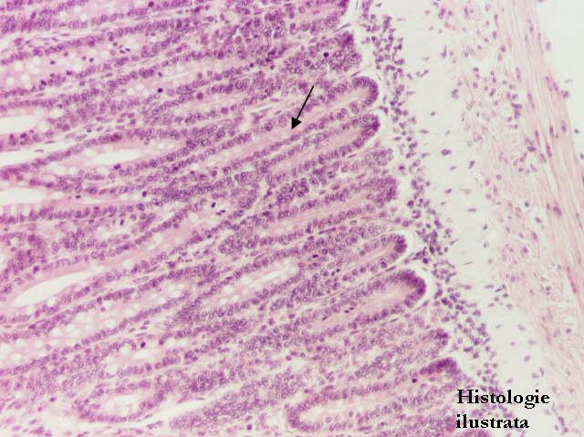
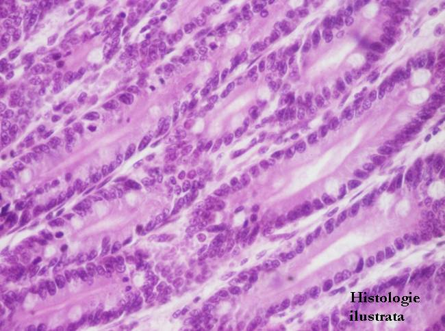
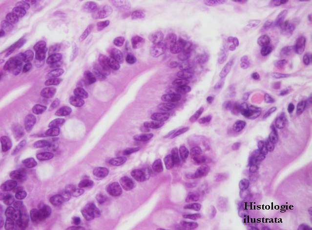
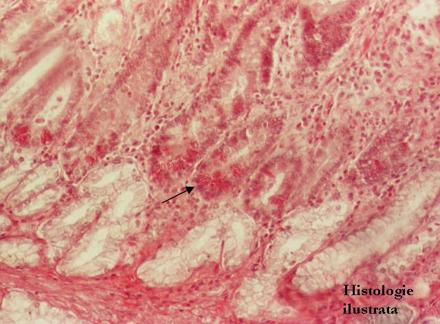
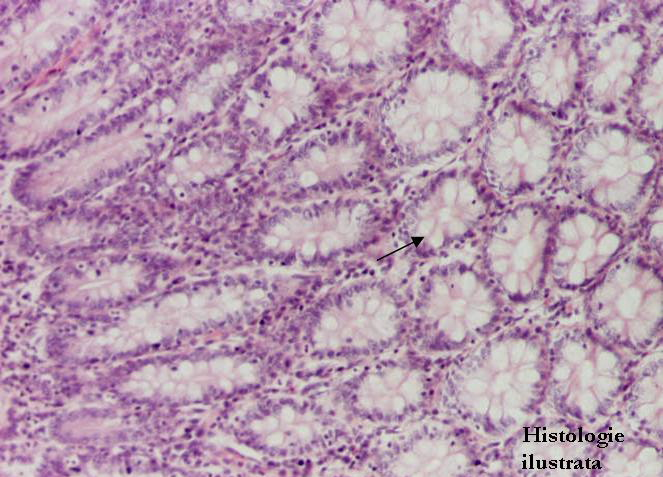
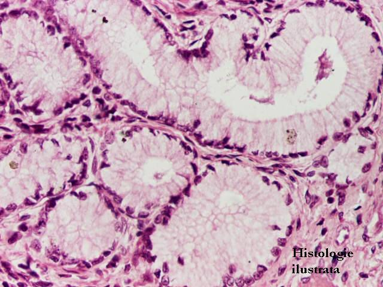
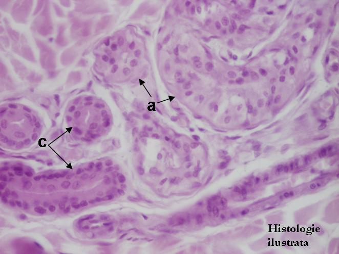

Chap.1 - Tissu épithélial
1.3. Tissu épithélial sécréteur
Tissu épithélial sécréteur exocrine (glandes exocrines)
Glandes à adénomère tubuleux




Fig. 41 - Glandes tubuleuses simples droites (glandes de Lieberkühn) – jéjunum, H.E. X 40
Fig. 42 - Glandes tubuleuses simples droites (glandes de Lieberkühn) – jéjunum, H.E. X 200
Fig. 43 - Entérocytes et cellules caliciformes dans la glande tubuleuse simple droite (glande de Lieberkühn) – jéjunum, H.E. X 400
Fig. 44 - Cellules de Paneth dans la glande tubuleuse simple droite (glande de Lieberkühn) – duodénum, H.E. X 100







Fig. 46 - Glande tubulo-ramifiée – glande pylorique,
H.E. X 100
Fig. 47 - Glande tubulo-ramifiée – glande pylorique,
H.E. X 200
Fig. 48 - Glande tubulo-ramifiée – glande de Brünner, duodénum H.E. X 200



Fig. 49 - Glande tubulo-glomérulée – glande sudoripare, peau, H.E. X 100
Fig. 50 - Adénomères (a.) et canaux excréteurs (c.) de la glande sudoripare – peau, H.E. X 200